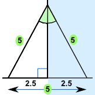
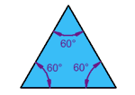
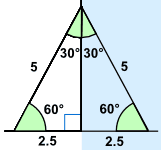
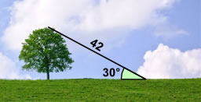
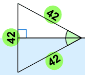

Solving Triangles by Reflection
 |
A 5ft ladder leans against a wall as shown. What is the angle between the ladder and the wall? |
This is surprisingly easy to solve by using Reflection:
Here is the triangle with its reflection Together they make an equilateral triangle (all sides equal). |  |
|  | The angles in an equilateral triangle are all 60° |
|  |
So the angle between the ladder and the wall is half of 60° = 30° |
Finding Length
We can use the same idea to find an unknown length.

Alex has a laser that measures distance.
By standing some distance from the tree Alex measures 42m to the top of the tree at an angle of 30°.
What is the height of the tree?
Here is the triangle and its reflection:
|  | Once again the triangle and its reflection make an equilateral triangle. So, we know the height of the tree must be half of 42m = 21m |
These examples show that the same triangle can occur in many different situations!